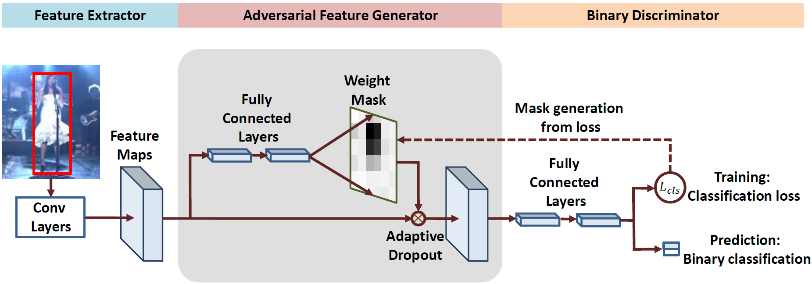

VITAL: VIsual Tracking via Adversarial Learning
Yibing Song1
Chao Ma2
Xiaohe Wu3
Lijun Gong4
Linchao Bao1
|
|  |
Abstract
The tracking-by-detection framework consists of two stages, i.e., drawing samples around the target object in the first stage and classifying each sample as the target object or as background in the second stage. The performance of existing trackers using deep classification networks is limited by two aspects. First, the positive samples in each frame are highly spatially overlapped, and they fail to capture rich appearance variations. Second, there exists extreme class imbalance between positive and negative samples. This paper presents the VITAL algorithm to address these two problems via adversarial learning. To augment positive samples, we use a generative network to randomly generate masks, which are applied to adaptively dropout input features to capture a variety of appearance changes. With the use of adversarial learning, our network identifies the mask that maintains the most robust features of the target objects over a long temporal span. In addition, to handle the issue of class imbalance, we propose a high-order cost sensitive loss to decrease the effect of easy negative samples to facilitate training the classification network. Extensive experiments on benchmark datasets demonstrate that the proposed tracker performs favorably against state-of-the-art approaches.
Demo
Downloads
| [VITAL.pdf] | : The paper. |
| [Poster.pdf] | : The poster. |
| [Results.zip] | : The OPE results on the OTB2013, OTB2015 and VOT2016 benchmarks. |
| [Code.zip] | : Available on Github. |
BibTex (DOI)